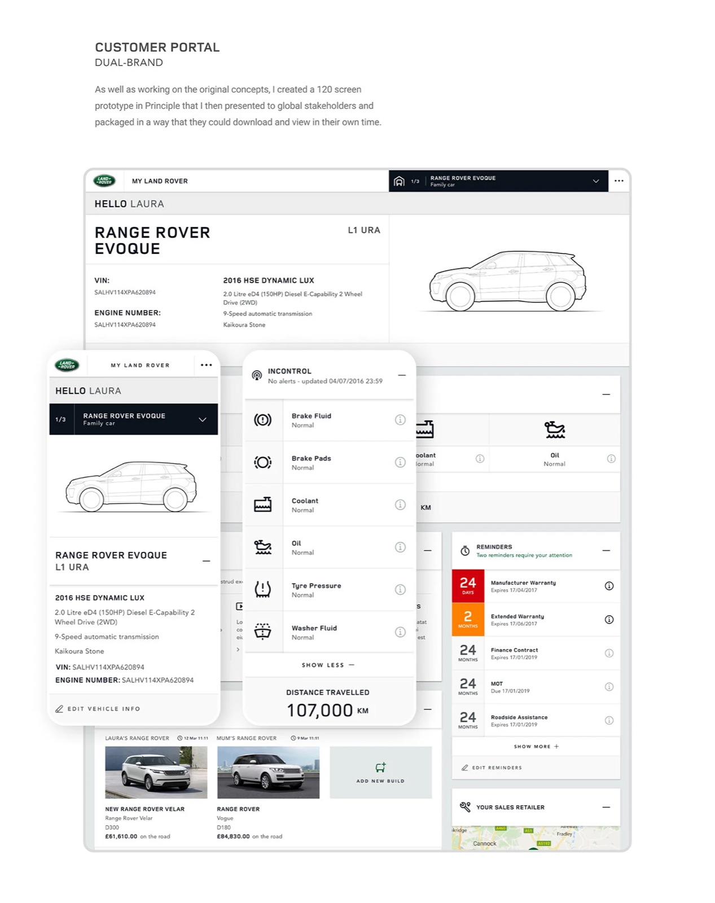
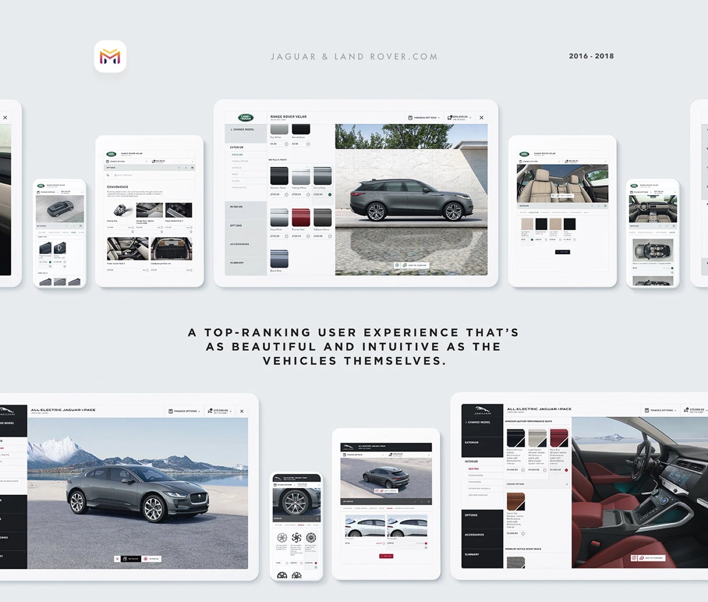
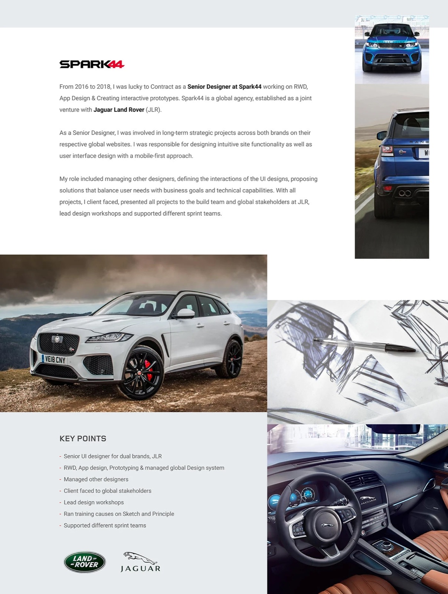

A six-month, ground-up rebuild of JLR's global website component library — pursuing efficiency, personalisation and conversion across two brands and 27 markets, with strategy informed by JD Power and Psyma performance benchmarks.

JLR's global digital experience was carrying years of legacy. Aging infrastructure, dozens of bespoke variants per asset, and a fragmented user journey from "I want to learn about a car" to "I'm sitting in one." Components shipped slowly, performed poorly, and the brand felt inconsistent across markets.
The mandate: a six-month pilot to rebuild the component library on Adobe AEM and ship to Germany and Australia first, with the entire global rollout dependent on whether the pilot proved efficiency gains big enough to justify deployment.

As one of two senior leads on a six-person team, I worked component-by-component. The poor performers were the ones whose responsive breakpoints fought the imagery — text overlays cropping vehicles awkwardly, requiring a different image variant for every layout.
The fix was constraint-driven: standardise on a 16:9 ratio for product imagery and let layout flexibility live in margin and typography rather than dozens of cropped variants. A 16:7 cinematic exception was reserved for hero modules where dramatic vehicle positioning earned its keep.
Alongside the rebuild I ran Figma workshops, set up the component library and established the Principle animation patterns for interactive states and transitions — giving the rest of the design and dev team a shared, repeatable kit.

In parallel, I overhauled the 'Models & Specifications' pages for the global site across all 27 markets. Led the design, ran competitor and out-of-sector analysis, and made data-driven UX/UI calls for every major decision.
The trick was surfacing what users actually needed to pick the right vehicle — without the page collapsing under both brands' complex model and trim ranges. Every decision served the user first. The output had to be flexible enough to work across Jaguar's range and Land Rover's range simultaneously, because both brands shipped from the same template.


Previous project
Next project